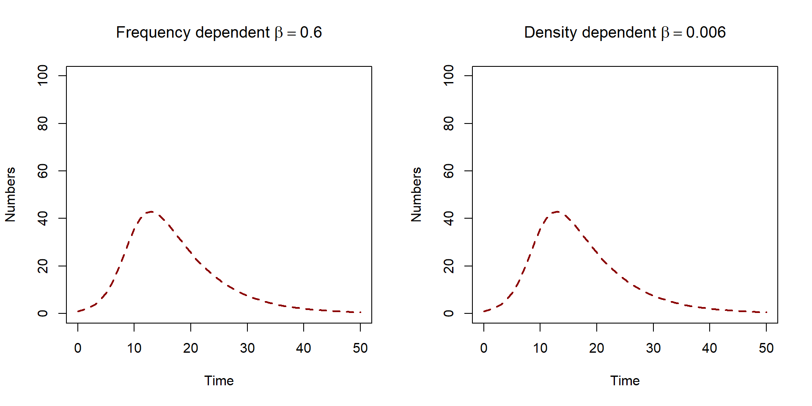

Here we will learn the difference between the assumption that transmission is either frequency or density dependent and how this affects how we interpret the transmission rate \(\beta\) when using proportions in numbers.
The first question is, what have we been assuming so far?
Recall that we formulate our infection process as follows,
\[ c \nu S p = \beta S I/N \]
the number of susceptible individuals (\(S\))
probability that a susceptible contacts an infected individual (\(p = I/N\))
rate of contact (\(c\))
probability of successful transmission given contact (\(\nu\)).
We assumed that the rate of contact \(c\)does not increase with population size. This is know as frequency dependent transmission. The rate of infectious contacts increases with the frequency of infected individuals in the population.
Instead, we may wish to assume that the rate of contact increases linearly with total population size \(N\). This is commonly referred to as density dependence. In this case we would have \(c = k N\), where \(k\) is some constant.
When working with numbers, the assumption of frequency or density dependence has larger implications for the transmission rate \(\beta\). If we wish to assume density dependence, we specify \(c = k N\), so our infection process is, \[
\begin{aligned}
(k N) \nu S p & = (k N) \nu S I/N \\
&= (k \nu) SI \\
&= \beta' SI.
\end{aligned}
\]
Because the population size \(N\) cancels out, our new transmission rate \(\beta' = k \nu\). The implication of this is that our transmission rate in density dependent transmission is a different dimension to our transmission rate in frequency dependence when using numbers. This means that that the value of \(\beta\) is not the same.
Let’s investigate this further with some numerical solutions.
Examples in R
We can write two ODE model functions. One where we assume density dependent transmission SIR_numbers_dens_model and one where we assume frequency dependent transmission SIR_numbers_freq_model.
SIR_numbers_dens_model <-function(time, state_var, pars) {# Extract state variables S <- state_var["S"] I <- state_var["I"] R <- state_var["R"]# Extract model parameters beta <- pars["beta"] gamma <- pars["gamma"]# The differential equations dS <--(beta * S * I) dI <- (beta * S * I) - gamma * I dR <- gamma * I# Return the equations as a list sol <-list(c(dS, dI, dR))return(sol)}SIR_numbers_freq_model <-function(time, state_var, pars) {# Extract state variables S <- state_var["S"] I <- state_var["I"] R <- state_var["R"] N <- S + I + R# Extract model parameters beta <- pars["beta"] gamma <- pars["gamma"]# The differential equations dS <--beta * S * I / N dI <- beta * S * I / N - gamma * I dR <- gamma * I# Return the equations as a list sol <-list(c(dS, dI, dR))return(sol)}# Define time to solve equationstimes <-seq(from =0, to =50, by =1)N <-100I0 <-1state_var_numbers <-c(S = N - I0, I = I0, R =0)# What are our parameter values?pars <-c(beta =0.6, gamma =0.14)pars_dens <-c(beta =0.6/ N, gamma =0.14)solution_freq_numbers <-as.data.frame(ode(y = state_var_numbers, times = times,func = SIR_numbers_freq_model,parms = pars, method ="rk4"))solution_dens_numbers <-as.data.frame(ode(y = state_var_numbers, times = times,func = SIR_numbers_dens_model,parms = pars_dens, method ="rk4"))par(mfrow =c(1, 2))plot(solution_freq_numbers$time, solution_freq_numbers$I, col ="darkred",lwd =2, lty =2, type ="l", ylim =c(0, N), ylab ="Numbers",xlab ="Time", main =bquote("Frequency dependent"~ beta == .(0.6)))plot(solution_dens_numbers$time, solution_dens_numbers$I, col ="darkred",lwd =2, lty =2, type ="l", ylim =c(0, N), ylab ="Numbers",xlab ="Time", main =bquote("Density dependent"~ beta == .(0.6/ N)))

We can achieve the same output when we specify \(\beta' = \beta/N\).
We can see this relationship when we compare our infection processes, \[
\begin{aligned}
\beta' S I &= (\beta/N) SI \\
& =\beta S I/N
\end{aligned}
\] We have taken some time to show these results, but there is one key message : when working with numbers, the value of the transmission rate is different for frequency or density dependent.
This is particularly important as published articles will use the term \(\beta\) regardless of what assumption they have made about the infection process. Be cautious when comparing values of the transmission rate across different models!
Summary and other assumtptions
When might we want to assume either frequency or dependent transmission?
In frequency dependent transmission, the rate of contact does not increase as population density increases. Therefore sexually transmitted diseases are often assumed to have frequency dependent transmission.
In density dependent transmission, the rate of contact does increase as population density increases. Therefore diseases affected by livestock are often assumed to be density dependent.
Only two choices? The choice between either frequency or density dependence seems like an extreme one. Indeed, in reality the form of transmission may lay somewhere in the middle.
\[ \beta X \frac{Y}{N^{\alpha}} \] where \(\alpha\) is some value between 0 and 1. If \(\alpha = 0\) then we have density dependence,
\[
\begin{aligned}
\beta S \frac{I}{N^{\alpha}} &= \beta S \frac{I}{N^{0}} \\
& = \beta S I,
\end{aligned}
\] and if \(\alpha = 1\) then we have frequency dependence,
\[
\begin{aligned}
\beta S \frac{I}{N^{\alpha}} &= \beta X \frac{I}{N^{1}} \\
& = \beta S \frac{I}{N}.
\end{aligned}
\]
See this paper for an example of estimating a scaling factor for the transmission term .
What about area? In our formulations of the infection process we assumed that we were working with a fixed area. We had \(c = k N\) but we may instead want to include the area \(A\), and so \(c = k N /A\). That is the rate of contact increases with the density of individuals in a specified area.
A note on notation
You will see the notation \(S\) and \(I\) used for both proportions and numbers, and the notation \(\beta\) used for both frequency and density dependent transmission. It is important that you understand (or seek out) the model assumptions in order to understand the model solutions and the interpretation of model parameters.
References
BEGON M, BENNETT M, BOWERS RG, FRENCH NP, HAZEL SM, TURNER J. A clarification of transmission terms in host-microparasite models: numbers, densities and areas. Epidemiology and Infection. 2002;129(1):147-153. doi:10.1017/S0950268802007148